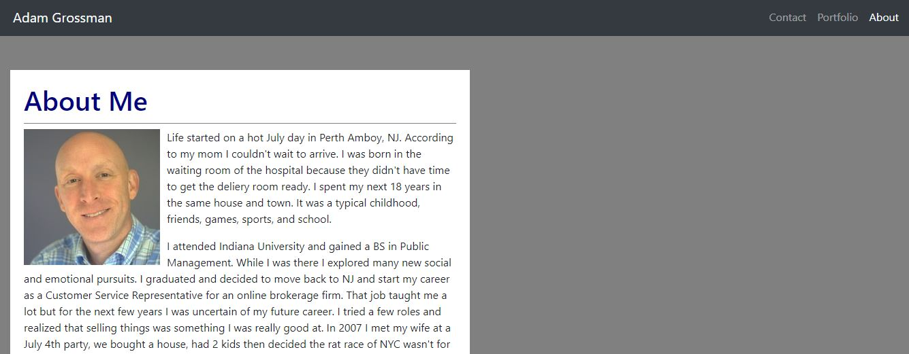

# 2-bootstrap

This was project was created as our 2nd homework assignment (7th day) for the Bootcamp full time 3 month session. The website was created using css and bootstrap components. We were given instructions and images on how the page needs to look and be laid out in 3 different sizes. The objective of the project was to create 3 pages that were linked, a about, portfolio, and contact page. The pages needed to be responsive and follow a similiar design and layout.  

portfolio page: https://adgrossm.github.io/2-bootstrap/
github link: https://github.com/adgrossm/2-bootstrap

